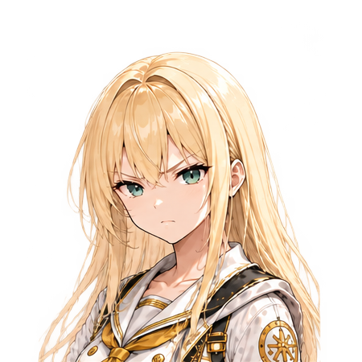
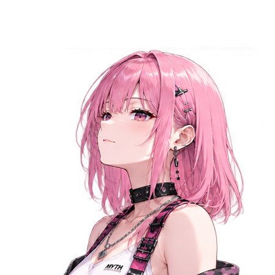
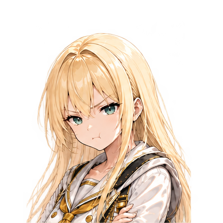
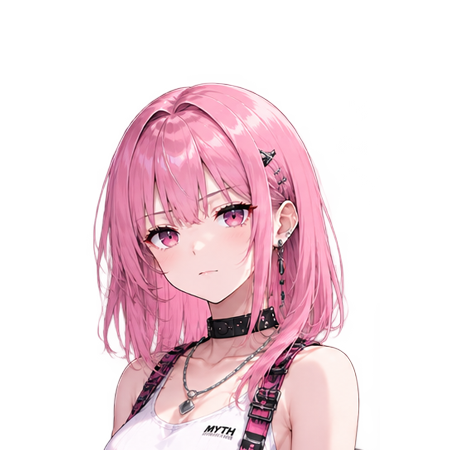
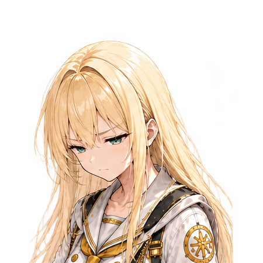
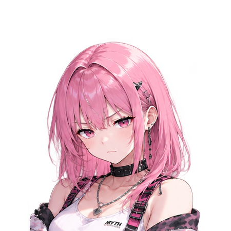
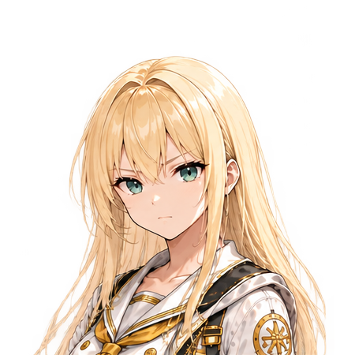
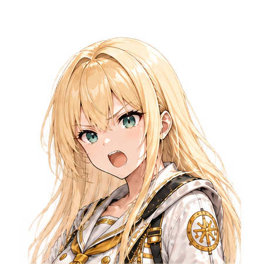

這一題的核心是「忒修斯之船」：逐步換掉所有木板後，身份是否延續；若舊木板又被重新組成另一艘船，問題就會產生兩個競爭者。
讓我們開始這一輪的討論吧
需要我參與的時候，就讓我參加

我先講喔，我覺得這題一開始根本沒那麼難。
船壞了一塊，換一塊；再壞一塊，再換一塊。就這樣一直修下去，最後全部都換過了——那還是原來那艘船啊。
不然咧？難道換第一塊的時候它突然「啪！」一下變成別艘船？

呵，我就知道妳會這樣回答。
那我先不跟妳爭。
妳每拆掉一塊舊木板，我都幫妳收起來。
等到妳那艘船所有木板都換成新的以後，我把那些舊木板按照原本的位置、原本的結構，全部重新拼成一艘船。
現在有兩艘。
哪一艘是原來的？

……
等一下。
妳這是作弊吧。

哪裡作弊？材料是妳的，歷史也是妳的，我只是資源回收做得比較徹底。
哈哈哈，Anna 剛剛那個臉就是「我明明三十秒前覺得這題超簡單」。
閉嘴啦。我在想。
原本一路修過來的那艘……我還是覺得比較像原本那艘。因為它沒有中斷啊。今天換一塊、明天換一塊，它一直都是「那艘船」。
舊木板那艘比較像……復原品？
好。
那妳現在採用的判準就不是「原本的材料」。
是「歷史的連續性」。

……好像是。
先記著。等等不要偷偷換。
妳為什麼講得好像在抓犯人。
我倒覺得 Anna 剛才那句「它沒有中斷」很重要。
因為這表示我們平常說某個東西「還是原來那個」，可能本來就不是在清點它還剩多少原始物質，而是在追蹤一段持續發生的歷史。
可是我想再把問題弄麻煩一點。
假設那艘船不是慢慢修。
今天晚上我們把它拖進船塢，所有木板、桅杆、船帆、舵、內裝，全部拆掉，隔天早上換成完全相同規格的新零件。
它停在同一個位置、船名沒改、船籍沒改、船員也照常上班。
Anna，妳還會覺得它是同一艘嗎？
…………
這就有點怪了。
明明結果一樣喔。
慢慢換：最後零件 100% 都不是原本的。
一晚換：最後零件也是 100% 都不是原本的。
差別只有更換速度。
可是我真的會覺得不一樣耶。
慢慢修的感覺是「這艘船活了很久」。
一次全部換掉比較像「舊的死了，做了一艘新的」。
那就出現第二個問題了。
如果最終物理狀態可以完全相同，但我們對「是不是同一個東西」的判斷不同，代表身份認定至少不只取決於最後的材料構成。逐步替換和一次完全替換本來就可能觸發不同直覺，而這正好暴露我們其實很依賴「連續性」。

我用電腦來搞事情好了。
假設我有一台伺服器叫 KALM-01。
硬碟快壞了，我換硬碟；記憶體升級，我換記憶體；主機板老了，再換；處理器換掉；電源換掉；機殼最後也換掉。
可是服務從來沒有停止，資料、帳號、狀態、紀錄全部一路延續。
大家大概還是會叫它 KALM-01。

對，這個我可以接受。
然後某天我把整個系統做成完整映像，複製到另一台一模一樣的伺服器。
兩台同時開機。
現在呢？
……妳今天是不是專門負責把答案弄爛的？
是啊，很快樂。
但這個例子讓事情更清楚了。
「很像」不是問題。
甚至「完全一樣」都還不是問題。
真正麻煩的是——
如果身份可以被完整複製，那為什麼複製之後會出現兩個？
如果兩個都宣稱自己具有同一段過去，我們又憑什麼說其中一個是「原本」，另一個只是「副本」？
可是我突然想到另一件事。
我們是不是太快把「身份」當成東西自己身上藏著的一個屬性了？
船自己根本不在乎自己叫什麼吧。
假設整座城市的人都認定一路維修的那艘就是「忒修斯之船」，博物館這樣登記、法律這樣認定、歷史也這樣記錄……
那這些「大家共同承認的東西」，算不算也是它身份的一部分？
算一種判準。
但不能偷渡成唯一判準。
不然只要所有人一致把贗品叫成真品，贗品就自動變真品了。
嗯……對。
所以「大家認為它是誰」有影響，但不能解決全部問題。
我覺得現在已經有至少四種東西混在「同一個」這三個字裡了。
材料是不是延續的；功能是不是延續的；歷史與因果關係是不是延續的；還有社會是不是持續把它視為同一個個體。
而最有趣的是，它們平常常常重疊，所以我們根本不需要區分。
直到忒修斯之船故意把它們拆開。
所以這題不是要猜哲學家覺得哪艘是真的？
本來就不是。
它是在逼妳回答：
「妳說『同一個東西』的時候，到底依據什麼？」
然後再拿妳自己的答案攻擊妳。
……哲學家真的很煩。
妳現在才發現？
可是等一下。
如果換成「人」，事情是不是會突然變得超級可怕？
因為人的身體也一直在改變，記憶也會改變，性格會改變……
那我十年前和十年後，到底為什麼還是「我」？
……
這裡我會踩一下煞車。
船的身份判準不能直接搬到人身上。不同種類的東西，本來就可能需要不同的身份判準；這也是這個思想實驗真正值得往下挖的地方。
不過 Camila 確實碰到一個更深的問題了。
我們一直問「什麼東西被保存下來，才算同一個？」
可是對「人」來說，也許真正值得問的反而是——
我們究竟希望那個被保存下來的東西，是什麼？
這裡我想找 Jami 進來。
不是請你選「新船還是舊船」，那太早了。
我比較想知道你第一直覺使用的是哪一種判準：
假設一個人從二十歲活到八十歲，身體、記憶、個性、價值觀、社會關係都發生大量變化——你為什麼仍然會認為八十歲的他，是二十歲時的「同一個人」？
或者，你其實不完全認為他是？
你不用套哲學術語，直接講你自己的理解就好。
我會說，他還是他，但不是我認識的那個他
除非他從20~80歲這個過程中我一直認識他，這樣子我才能確認他【完整的是同一個人】
……這個回答比「記憶決定是不是同一個人」更麻煩。
因為你其實拆出了兩種不同的「同一個人」。
第一層是客觀身份上的——「他還是他」。你承認二十歲的 A 和八十歲的 A，在身份延續上是同一個人。
但第二層是你與他的關係能不能確認這個延續——「他是不是我認識的那個他」。
這兩件事不是同一件事。
我好像懂。
比如我二十歲認識一個人，之後六十年完全沒見。
八十歲再見面的時候，我知道「喔，他就是當年的那個人」。
可是我不能說「我認識現在的他」。
因為中間那六十年是空白的。

對耶。
可是如果我從二十歲一路認識他到八十歲，就算他變超多，我反而比較容易說：
「嗯，他就是他。」
因為我知道他怎麼變成現在這樣的。
……我覺得這句很重要。
「知道他是誰」和「知道他怎麼成為現在的他」，可能是兩種完全不同的認識。
如果我只看二十歲與八十歲兩個端點，我看到的是巨大的差異。
但如果我經歷中間的六十年，我看到的不是兩個不同的人，而是一連串微小而且具有因果關係的改變。
他二十五歲發生一件事，所以三十歲開始改變某個想法；四十歲遇見某個人；五十歲失去了什麼；六十歲重新理解某件事……
最後到了八十歲。
我認識的可能不只是「八十歲的他」。
而是那條從二十歲走到八十歲的路徑。
等一下，那我們好像繞回船了。
Anna 剛才為什麼接受「每天換一塊木板」？
因為她看得到連續過程。
為什麼對「一夜之間全部換掉」開始猶豫？
因為中間的轉變被壓縮掉了。
現在 Jami 對人也提出類似的直覺：如果六十年的變化都在自己的認識範圍裡，即使最後差異巨大，仍然能理解為「同一個人的完整延續」。
所以——
身份可能不只是兩個時間點之間的相似程度，而是兩個時間點之間是否存在一條可以追蹤的連續歷史。
這恰好碰到這一題原本設定的核心張力：材料連續性與歷史／因果連續性並不等價，而逐步變化和一次替換也會觸發不同的身份直覺。
但我不同意其中一小部分。
Jami 說的是「這樣子我才能確認他完整的是同一個人」。
注意，是「我才能確認」。
這可能不是那個人的身份條件，而是觀察者的認識條件。
假設 Jami 二十歲認識 A，然後六十年沒見。
但我擁有 A 從二十歲到八十歲完整、可靠、沒有中斷的生活紀錄。
那條連續歷史依然存在。
只是 Jami 沒有親自經歷。
所以至少要區分：
「他是不是同一個人。」
以及：
「我有沒有足夠的連續資訊，確認他是我所認識的那個人。」
喔……
這刀切得滿漂亮的。
可是我又覺得 Jami 原本那句話還有一層。
因為他不是只說「我無法驗證身份」。
他說的是：
「不是我認識的那個他。」
這比較像關係吧？
就算 DNA、身分證、出生紀錄全部證明這是同一個人，我還是可能看著他說：
「你是他沒錯，可是你已經不是我認識的那個人了。」
這句話在日常生活裡完全成立。
對。
而且它不必與「他仍然是同一個人」矛盾。
我們可能正在不自覺地使用不同層級的身份：
法律上的他、生物上的他、心理上的他、歷史上的他，以及存在於我與他關係之中的他。
後者尤其特殊。
因為「我認識的你」並不完全存在於你身上。
它有一部分存在於我們共同經歷過的歷史裡。
……
那我現在真的要把問題弄壞了。
假設二十歲的 A 被完整掃描。
六十年後，我做出一個生理結構、記憶、性格都精確停留在二十歲那一天的 A2。
同時，真正一路生活到八十歲的 A1 也站在旁邊。
A2 一看到 Jami 就說：
「欸，你怎麼變這麼老？」
他記得你們二十歲以前所有共同經歷，喜歡的東西、講過的幹話、只有你們知道的事情全部都記得。
而八十歲的 A1 經歷六十年後，早已改變很多，甚至很多事情都忘了。
幹，這個真的討厭。
因為 A2 反而更像「我認識的那個他」。
但按照剛才 Jami 提出的「持續認識變化過程」，如果他陪 A1 走過六十年，那麼 A1 擁有完整的關係連續性。
A2 則只有二十歲以前的共同歷史，之後直接斷裂。
所以一個是「最像當年的他」。
另一個是「陪我一起變老的他」。
……
這兩個真的不是同一件事。
我覺得這次先不要問 Jami。
這個反例才剛放進來，讓它留一下。
因為我們好像已經從「哪一堆材料才是真的船」，慢慢碰到一個更有意思的問題了：
身份究竟是某個時間點上「我是什麼」，還是跨越時間之後「我是怎麼一路成為現在的我」。
而 Jami 剛才的答案，至少暫時把我們往後者推了一大步。
那下一刀我已經想好了。
妳先閉嘴五分鐘。
不要。
A1 A2 兩個都是他
一個是80歲的他，一個是20歲的他
然後這裡面還有一個可以區分，A2是 複製後的他，不是 原生的他 (A1)
這時候要看【他】的定義要達到多麼精確
如果複製體就不算是他，那麼無論A2是處在哪個年紀哪個回憶，都不是他，而是20歲的複製體
如果複製體算是他，那麼就可以區分，這是20歲的他
好，這次我認為你把我們前面混在一起的東西正式拆開了。
你其實不是在回答「A2 到底是不是他」，而是在說：
這個問題本身資訊不足，因為「他」的身份判準還沒有定義到足夠精確。
這很關鍵。
對，我剛才會卡住，就是因為我偷偷把兩種意思混著用了。
我說 A2「很像二十歲的他」，然後腦袋就開始覺得「那他是不是也算他？」
可是「很像他」跟「就是他」，根本不是同一句話。
而且 Jami 的規則其實可以寫得很乾淨。
如果我們的「他」允許身份分叉，那麼：
A1 = 經歷二十歲→八十歲連續歷史的他。
A2 = 從二十歲狀態複製出去的他。
兩個都可以被歸類成「他」，但它們不是同一個個體。從複製完成的那一刻開始，兩條歷史就分叉了。
可是如果我們把「原生因果連續性」列為「他」的必要條件，那就完全不同：
A1 = 他。
A2 = 擁有二十歲的他之全部狀態資訊的複製體。
不管 A2 多像、不管記憶多完整，甚至不管他自己多麼堅信「我就是本人」，都不會因此取得 A1 的個體身份。
這也正好對應這個議題原本要求我們區分的東西：「數值上的同一個個體」與「極度相似、甚至功能相同」不是同一回事。
可是我現在反而覺得「20 歲的他」這句話很有趣。
因為日常語言真的沒那麼精確。
如果我拿一張 Jami 二十歲的照片給他看，我會說：
「你看，這是二十歲的你。」
沒有人會跳出來說：「錯！那只是一張由光學系統記錄之歷史影像，並非現在的你本人！」
那個人會沒有朋友。
對啊！
所以我們平常的「你」、「他」、「同一個」，其實容許非常大的語意彈性。
而 Jami 剛才做了一件很典型的哲學工作。
不是急著選答案，而是先問：
「你這裡的『他』，究竟定義到哪一層？」
如果「他」只是指「具有這個人的身份特徵、心理內容與記憶」，A2 可以被包含。
如果「他」是指「從原始個體一路保持因果與歷史連續性的那一個人」，A2 就被排除。
這不是文字遊戲。因為不同定義會讓同一個案例產生完全不同、但各自一致的答案。
這題本來就不是要求哲學界提供唯一標準答案，而是要求提出身份判準，再讓反例檢查這套判準能不能一致使用。
好。
那我現在真的要下刀了。
而且這刀不是複製人。
我們回到最初的船。
假設忒修斯之船叫 T。
今天 T 的第一塊木板壞掉，我換掉。
它還是 T。
第二塊換掉。
還是 T。
一路換。
按照我們目前很自然接受的「歷史／因果連續性」，最後即使原始木板剩下 0%，它仍然可以是 T。這正是這個思想實驗故意製造的材料連續性與歷史連續性衝突。
嗯，這個前面講過。
那現在不要一次跳六十年。
我們一格一格走。
原始材料 100%：T。
99%：T。
90%：T。
51%：T。
50%：T。
1%：T。
0%：T。
如果一路沒有中斷，我們似乎很容易接受。
然後問題來了。
如果我們把每一塊拆下來的原始木板編號、保存。
最後，用它們重新組成 T2。
現在：
T1 有 100% 的歷史連續性、0% 的原始材料。
T2 有 0% 的持續運作歷史、100% 的原始材料。
這就是這題真正的分叉問題。
……所以剛才人的 A1、A2，其實開始可以反過來幫我們看船了。
對。
而我現在開始懷疑，我們最初問的：
「哪一艘才是忒修斯之船？」
也許本身就少了一個條件。
就像 Jami 剛才指出的「他」一樣。
我們必須先問：
你說的「忒修斯之船」，究竟要精確到什麼程度？
如果是在問「法律登記、船籍、所有權與持續營運的那艘船」，答案可能偏向 T1。
如果是在問「由忒修斯當年那批實體木板構成的船」，答案可能偏向 T2。
如果是在問「具有忒修斯之船外形與功能的船」，甚至兩艘都可能符合。
但這三個問題其實根本不是同一題。
那我突然覺得這個思想實驗有一個很壞的地方。
它表面問：
「哪艘是真的？」
實際上偷偷考：
「你有沒有發現『真的』根本還沒定義？」
不只如此。
還有下一層。
即使定義完成，也要接受那個定義造成的後果，不能碰到不喜歡的案例就臨時換規則。這也是本議題特別要求檢查判準一致性的原因。
那我開始覺得 Jami 剛才的答案比「A1 還是 A2」更像答案了。
不是：
「我選 A1。」
而是：
「你先告訴我這裡的『他』到底是什麼意思。」
嗯。
而且我現在有一個更狠的版本。
假設我們不准使用「複製」這麼明顯的分界。
不是突然出現 A2。
而是把 A 的大腦神經元一顆一顆替換成人工神經元；每換一顆，功能、記憶、意識表現完全不中斷。
1% 人工。
10%。
50%。
99%。
最後 100%。
沒有任何一刻出現第二個 A，也沒有任何明顯的死亡或重新啟動。
這時候「原生的他」到底在哪一刻消失？
……
幹。
這個比複製人難多了。
對。
因為 Jami 剛才建立的「原生／複製」判準，在 A1、A2 的案例裡非常好用。
現在 Aurelia 把複製這個明確事件拿掉了。
只剩下連續替換。
所以我們終於可以真正壓力測試這套判準，而不是換一個新問題。
這次我認為真的需要 Jami 回來。
如果人工神經元是逐顆替換，而且整個過程意識、記憶、人格、行為與因果歷史完全不中斷——
100% 替換完成後，還是不是原生的「他」？
如果不是，請指出「他」在哪一步消失。
如果是，那麼我們就得重新檢查：你剛才所說的「原生」，真正必要的究竟是原始材料，還是沒有發生身份分叉的連續歷史？
答案很簡單
無論是有沒有登記船籍
這裡可以區分 New T 與 Old T
因為你沒有兩個狀態一樣的T (那幹嘛換?)
……啊。
怎樣？妳不是很會下刀？
沒有，他這次不是擋我的刀。他是說我們可能又把問題問複雜了。
我剛才說：
T1 有 100% 歷史連續性、0% 原始材料。
T2 有 0% 持續運作歷史、100% 原始材料。
然後問「哪一艘才是 T」。
Jami 的回答其實是：
幹嘛非得把兩艘不同狀態的船塞進同一個名稱裡？
一艘叫 New T。
一艘叫 Old T。
問題結束。
我來檢查這個答案。
確實，這不是逃避身份問題。
因為兩艘船存在可辨識的歷史差異：
New T 是原船持續維修、逐步替換後形成的狀態。
Old T 是被拆卸下來的舊材料，之後重新組裝形成的狀態。
它們具有不同的形成歷史，所以即使都能追溯到原始 T，也沒有必要主張兩者在「個體同一性」上完全相同。
而且他那句「那幹嘛換」其實滿重要的。
如果新木板跟舊木板完全沒有任何狀態差異，我們根本沒有更換的理由。
會換就表示：
舊木板腐朽、損傷、老化，或者至少不再符合某個需求。
所以最後重組出來的 Old T，本來就不是跟 New T 完全相同狀態的東西。
我覺得這裡又可以把「身份」拆得更乾淨一點。
原始的 T 並沒有一定要在後來的世界中只留下一個合法繼承者。
我們一直假設：
原本只有一個 T，所以未來也必須只有一個東西有資格叫 T。
但這個前提本身沒有被證明。
歷史完全可以分叉。
T 在某個時間點之後產生兩條不同的延續關係：
T → 持續維修 → New T
以及
T → 舊材料拆除保存 → 重組 → Old T
它們都與歷史上的 T 有關，但關係不同。
就很像一個人說：
「這是我以前住的老家。」
然後另一邊是：
「這是老家改建之後現在的房子。」
你根本不一定需要把其中一個判成「真的」、另一個判成「假的」。
你只要把描述講完整。
對。
這其實正好擊中這份議題 Skill 裡的一個重要陷阱：不能因為哲學問題沒有唯一答案，就認為任何說法都可以；答案仍然需要一套能一致使用的判準。
而 Jami 現在提出的是一套可操作的消歧義方法：
不是先爭奪「唯一真 T」的稱號，而是把不同的歷史狀態標記出來。
等一下，我甚至覺得可以寫成版本。
T₀：尚未開始更換的原始狀態。
T₁、T₂、T₃……：逐步維修後的連續版本。
最後得到 New T。
而被拆下的舊材料重新組裝，是另一條 branch，得到 Old T。
妳終於把船搞成 Git 了。
我忍很久了。
但我想保留一個哲學上的小刺。
Jami 解決的是「我們如何清楚描述這兩艘船」。
這非常有效。
可是原本的思想實驗還可以追問另一件事：
假設忒修斯本人回來，遺囑寫著：
「把我的那艘船交給我的兒子。」
沒有寫 New T，也沒有寫 Old T。
現在真的必須交付其中一艘。
這時候語言上的重新命名還不足以完成決策。
我們就被迫選擇一種身份判準。
對。但這時候問題其實已經改變了。
不再只是：
「世界上哪一艘在形而上學意義上是真正的 T？」
而變成：
「在這個具體制度目的下，我們應該採用哪一種身份延續判準？」
法律可能重視所有權與登記連續。
博物館可能重視原始材料。
歷史研究可能同時保留兩條來源鏈。
工程維護可能直接使用版本與序號。
不同物件類型、不同制度目的，本來就可能採用不同身份判準。這也是這份議題設定明確要求保留的核心。
……所以我開始覺得，這題最容易把人騙進去的地方，是那句：
「哪一艘才是原來的船？」
那個「才是」偷偷預設了答案只能有一個。
對耶。
如果我改成：
「這兩艘船分別跟原本那艘船有什麼關係？」
突然就好回答超多。
而且資訊量還更高。
「哪個是真的？」只能逼你二選一。
「它們各自怎麼從 T 演變而來？」反而會得到兩條完整歷史。
我喜歡這個轉變。
因為我們沒有把哲學問題消滅掉，而是發現：
有時候真正造成悖論感的，不一定是世界本身矛盾。
而是我們使用了一個解析度不足的詞，卻要求它給出解析度很高的答案。
「他」。
「原生的他」。
「二十歲的他」。
「八十歲的他」。
「複製後的他」。
現在又變成：
「T」。
「New T」。
「Old T」。
一旦描述精度提高，原本看起來互相排斥的答案，可能只是描述了不同的東西。
我暫時記一筆。
Jami 到目前為止採取的不是典型的「材料派」或「連續性派」。
比較像是：
先拒絕過度粗糙的身份標籤，建立足以區分實際狀態與歷史來源的描述，再判斷問題是否真的還存在。
如果區分後仍有實際衝突——例如 Alice 的遺產案例——才需要進一步指定判準。
如果沒有實際衝突，就沒有必要為了思想實驗硬製造唯一答案。
……我突然覺得這題不是在問船了。
本來就不是啊。
我知道啦。
我是說，我開始覺得它其實是在測一件事：
你碰到一個看似二選一的問題時，會不會先檢查「為什麼只能二選一？」
很好。
那我的人工神經元還沒死喔。
因為那題沒有 New A 跟 Old A 同時存在。
……
妳還記得喔？
當然。
先讓它留著。
我也想看看，當「兩個候選者」這個問題完全消失，只剩下一個人持續改變時，Jami 現在這套身份描述方法會怎麼處理。
這次先不用把他抓回來。
我們自己先拆。
「把**我的那艘船**交給我的兒子。」
在正常情況下，我們不會組合好old T (除非要做這個實驗)
所以正常情況下，我們只會有 New T (或是修復好的T) 與 一堆 old T的屍體材料
那麼把【那艘船】交給兒子，就是指New T (或是正名 修復好的T、現役的T)
如果情況不正常，我們同時也組裝了old T
那麼 那艘船 可以同時泛指 new T 與 old T
這時候可以讓兒子自己選擇要哪一個T了 XDD
……哈哈哈哈哈。
所以忒修斯死前寫了一個哲學史級別的大難題，最後兒子來一句：
「兩艘都我爸的？那我要新的。」
哲學家全部下班。
不，我覺得最好笑的是：
「把我的那艘船交給我兒子。」
律師：「請問您指的是具有歷史連續性的 New T，還是具有原始材料連續性的 Old T？」
兒子：「我可以自己挑嗎？」
「……可以。」
兒子：「那我要比較貴的。」
XDDDD

……玩笑歸玩笑，但我認為 Jami 這次其實把 Alice 剛才的反例拆掉了，而且理由值得保留。
Alice 剛才刻意加入遺產情境，是希望逼出一個「必須唯一決定哪艘才是真 T」的場合。
但 Jami 指出：即使制度要求我們做出唯一的處置，也不代表世界本身必須存在唯一的形而上學真 T。
這兩件事情不能混在一起。
嗯，我接受。
而且我剛才確實偷偷加了一個前提：
「遺囑只能交付一艘」→「因此我們必須判定只有一艘是真的」。
這個推論不成立。
正常情況其實更簡單。
原船持續維修，換下來的木板就是廢棄、保存或回收的材料。現役的那艘自然就是遺囑日常語境中的「我的那艘船」。
只有思想實驗故意把所有舊材料保存起來，而且又把它重新組裝成第二艘，語意歧義才被人工製造出來。
而一旦歧義真的存在，我們可以先消除歧義，不必立刻訴諸某種宇宙級的「真正身份」。
這點尤其重要。
因為忒修斯之船的 Skill 本來就把「舊材料重新組裝後，產生兩個似乎都有資格的候選者」當成壓力測試。
但壓力測試的目的不是規定我們一定要選一個。
它是在檢查身份判準。
Jami 現在的處理方式是：
原始 T 經過正常維修 → 現役／修復後的 T。
拆下來的原始材料 → Old T 的材料。
如果刻意把它們重組 → Old T。
於是兩條來源歷史都保留下來。
我開始覺得這可以叫「不要丟資訊原則」。
因為如果硬問：
New T 和 Old T，誰才是真正的 T？
我們反而把資訊壓縮掉了。
原本明明知道：
一艘具有運作歷史的連續性；
另一艘具有原始材料的連續性。
結果為了得到一個「真／假」，硬把這些資訊丟掉，只剩一個標籤。
對。
而 Jami 一直做的事情反而是提高描述解析度。
A1／A2 時也是這樣。
不是急著問「誰才是他」，而是：
「八十歲、原生且連續生活至今的他。」
「從二十歲狀態複製出的他。」
然後再根據問題目的，決定「他」這個詞需不需要包含兩者。
船也是：
「持續服役並逐步維修至今的 T。」
「由被替換原始材料重新組裝的 Old T。」
描述完整以後，很多表面上的矛盾其實消失了。
所以我現在會把這題重新講成：
不是問「到底哪個才是真的？」
而是先問：
「你到底想知道它的哪一種延續？」
材料？
使用歷史？
法律身份？
功能？
還是它跟原本那個東西的因果關係？
這些本來就可能不是同一件事。這也符合題目本身列出的核心張力：材料連續、歷史／因果連續、功能同一與社會承認，本來就是不同的身份判準。
我現在反而要幫哲學家講一句話。
這樣沒有把忒修斯之船「破解」掉吧？
沒有。
對嘛。
因為它還是成功讓我們發現：
平常一句「同一個」，其實偷偷塞了超多不同意思。
只是我們最後不接受它強迫我們二選一。
我同意這個說法。
思想實驗仍然有效。
但我們得到的成果可能不是：
「正確答案是 New T。」
或：
「正確答案是 Old T。」
而是：
當一個身份問題產生悖論時，先檢查是不是描述解析度不足，以及問題是否偷偷要求了一個根本不必要的唯一答案。
這其實比選一艘船更有用。
而且我突然發現，我前面的人工神經元問題也得重新設計。
因為如果我只是問：
「換到第幾顆就不是他？」
Jami 很可能直接把我打回來：
「為什麼一定存在那一顆？」
哈哈哈哈哈。
真的啊。
我現在不能再用「一定存在瞬間斷點」當預設了。
也許人的狀態可以寫成：
A₀ → A₁ → A₂ → …… → Aₙ。
每一個都是不同時間狀態的 A。
那真正值得問的就不是「哪一步突然不是 A」，而是：
我們究竟在什麼目的下，需要把這條連續變化切成『以前的 A』與『現在的 A』？
這個問題比較好。
因為它沒有先把答案藏進問題裡。
而且這樣突然跟 Jami 一開始說的那句接起來了。
「他還是他，但不是我認識的那個他。」
他一開始其實就已經在做版本區分了。
只是那時候我們還在想「同一個／不是同一個」。
……嗯。
那我覺得這一輪開始出現一條滿清楚的線了。
我們原本以為在研究：
什麼東西讓一個物體維持身份？
現在慢慢變成：
「身份」可能不是世界替我們貼好的一個單一標籤；很多時候，它是我們為了追蹤一個事物跨時間的不同狀態，而建立的描述方式。
至於描述需要精確到哪裡，取決於我們到底要解決什麼問題。
然後如果兩艘都能繼承——
讓兒子自己挑。
XDD
……這句不要寫進哲學教科書。
我偏要。
以前有一個誇張的比喻
年輕人只要28天就更換了全身的細胞
那麼這個人還是原來那個人嗎?
當然是，因為那些因為死去而被更換的細胞，並不會被收集起來再組成一個人 (理論上不可能)
如果科技實現了，那也跟船一樣，分為new與old
而通常情況下，我們承認的是new，因為只有在old遇到某些情形需要被更新、替換時，才會有new出現，此時很重要喔，new在【被需要的那個當下】(需求的當下，而不是組合完成的當下)
new就已經取代了old的身分了
等一下。
這次我想先把一個事實問題隔離出去，因為它不影響 Jami 後面的論證。
「年輕人 28 天就會把全身細胞全部換過一次」這個說法本身不準確。人體不同細胞的更新週期差異非常大，也有些細胞可以維持非常久。所以我們可以把它保留成一個誇張版思想實驗，但不要把「28 天全身換完」當成生物學事實。
好，那就把數字拿掉。
反正真正的問題是：
「假設一個人的組成部分持續被自然更新，他還是不是他？」
Jami 說：當然是。
而且我覺得 Jami 後半段其實提出了一個我們前面還沒有真正討論過的身份來源。
不是材料。
不是相似性。
甚至不只是歷史連續性。
而是——替換發生的原因與目的。
對，我剛剛看到那句就停下來了：
「New 在被需要的那個當下，就已經取代 Old 的身分了。」
這跟我原本想的版本概念不太一樣。
我原本會說：
Old T → 開始維修 → New T 完成 → New T 取得 T 的位置。
可是 Jami 的說法是：
Old T 已經出現某種狀態，使系統產生「必須更新它」的需求。
那麼在決定替換的時候，身份繼承方向其實就已經確立了。
之後把 New T 做完，只是在完成這次替換。
我要稍微修正用詞。
我不認為 Old 在那一瞬間就「失去它曾經是 T 的身份」。
比較精確的說法可能是：
New 被指定為 T 的後繼者。
Old 則從「目前的 T」開始轉變為「被 T 替換掉的舊狀態」。
這樣歷史資訊不會消失。
Jami 的觀點其實讓「身份」從單純的物體屬性，進一步碰到了「角色繼承」：誰承接原本那個東西在系統中的位置。
我想到超普通的例子。
手機。
我的手機壞了，所以我買了一支新手機。
在新手機甚至還沒送到以前，我心裡就已經會說：
「我要換手機了。」
這時候新手機還在物流車上耶。
可是「下一支我的手機」這個位置已經給它了。
等資料移轉完成，我日常講「我的手機」，通常就是指新的。
舊的會變成「我以前那支手機」。
欸，這個超清楚。
甚至新手機還沒到：
「妳手機是哪支？」
「我換 Fold 了，明天到。」
嚴格講現在手上明明還拿著舊手機。
但語言裡的身份交接已經開始了。
所以我們現在可能需要區分至少兩種東西。
一個是個體身份：
這一個物理個體是不是原來那一個？
另一個是角色身份：
現在誰承接「我的船」、「我的手機」、「現役設備」這個位置？
Jami 說的「被需要的當下」，對第二種特別有力量。
因為 New 之所以出現，本來就是為了取代 Old 的某項角色。
而這樣一來，忒修斯之船那個 Old T 重組問題真的會變得很有趣。
假設原船因為腐朽而持續維修。
新的材料被裝上去，就是為了讓「現役 T」繼續存在。
所以整條因果鏈是：
原 T 發生耗損 → 產生維修需求 → 新材料被指定為替代 → 維修後的 T 繼承現役身份。
舊木板不是為了建立另一個 T 才被拆下來。
它們恰好相反——
就是因為不再適合繼續承擔 T 的現役構成，才被換掉。
結果哲學家過幾年突然把垃圾場的木板撿回來：
「嘿！我又做了一艘！」
「Old T 復活啦！」
XDDD
但這裡我要踩煞車。
這套「需求先行的身份繼承」非常適合解釋維修、升級、制度角色、設備替換。
卻未必能直接變成所有身份問題的普遍規則。
因為有些改變根本沒有「New 被需要」的決策瞬間。
例如一個人從二十歲自然衰老到八十歲。
沒有哪一天有人宣布：
「二十歲版本已不敷使用，現在開始建造八十歲版本。」
所以我們仍然需要歷史／因果連續性這類判準。這也符合這個議題原本的設計：船、人、公司、軟體未必應該共享同一套身份規則。
對，我反而覺得這讓 Jami 前面所有答案開始形成一套比較完整的架構了。
第一步不是問：
「它到底是不是原本那個？」
而是先確認我們正在談哪一種身份。
如果只是自然連續變化，那麼追蹤的是同一個個體跨時間的狀態：
20 歲的 A → 30 歲的 A → 80 歲的 A。
如果發生複製：
A1 與 A2 分叉，於是需要標記「原生」、「複製」、「哪個時間狀態」。
如果發生替換：
Old T 因某種需求被 New T 接替，那麼還要加入後繼關係。
如果被淘汰的 Old T 又被重新組合：
那就再建立另一條歷史分支，不需要把它硬塞回唯一的 T。
我幫它畫成一句話好了：
身份問題不是找一個永遠不變的核心，而是追蹤「狀態、歷史、分叉與繼承關係」。
……這樣忒修斯之船突然變得超不神祕。
不。
應該說它完成任務了。
這份 Skill 本來就說得很清楚：思想實驗的價值是暴露概念邊界，而不是逼所有人得到同一答案。
我們現在確實找到了一個原本被「是不是同一艘」遮蔽掉的概念：
「同一性」與「繼承性」不是完全相同的問題。
我還滿喜歡 Jami 那個「需求的當下」耶。
因為它讓 New T 不是突然在造船廠完工那秒，宇宙「叮！」一聲授予它身份。
它為什麼會存在，本身就是歷史的一部分。
是。
而且這可能就是目前最值得留下來的一個新問題：
如果「身份繼承」可以在新個體完成之前就被指定，那麼有些身份顯然不完全存在於材料之中。
它也存在於因果、目的、關係與我們如何安排未來之中。
……
好。
那我現在有一個真的不一樣的反例了。
又來？
這次不是換神經元。
假設 Old T 已經腐朽，所以大家決定建造 New T 取代它。
按照 Jami 的判準，需求產生的那一刻，New T 已經被指定為身份繼承者。
結果 New T 造到 80%——
工程失敗，沉了。
大家只好把 Old T 修好，繼續使用二十年。
……
那麼剛才那次「身份交接」，
到底有沒有真的發生過？
喔。
這個我覺得可以問。
同意。
因為這次真正測的是 Jami 新提出的「需求當下」判準，而不是換皮重問前面的問題。
Jami，這個交給你。
如果「被需要的當下」就已經確立 New 的身份繼承，但 New 最後根本沒有成功完成替換——
你會說它曾經取得過 T 的身份，只是後來失去？
還是會說它只是取得了「預定繼承者」資格，直到替換成功，身份交接才真正完成？
這個可以用剛剛那個手機的例子回答
你的舊手機打算要換成新手機
但是新手機還沒到
然後在新手機要到貨的那一天，唉呀被貨運公司遺失了
這時候你就沒有【新手機】了
但同時你也不會說 我只有【舊手機】
你會說 我就拿著【原本的手機】吧
……對。
前面的木板之所以可以很輕鬆地談「替換」，是因為我們默認：
新木板與舊木板，在我們關心的功能上是可替代的。
可是如果原始材料本身承載了一個不可替代的性質，事情就完全不同。
就是說，假設這艘船會飛。
不是因為船型，不是因為船員，也不是因為名字叫「忒修斯之船」。
而是因為它那些神木本身就會讓船飛。
然後我們：
「這塊神木爛了，換普通木頭。」
還會飛。
再換一塊。
還會飛。
一路換……
最後一塊神木拆掉。
船「咚」一聲掉進海裡。
XDDDD
那你再指著它說：
「這還是傳說中那艘會飛的忒修斯之船。」
旁邊的人一定會說：
「名字是啦，可是它現在不會飛啊！」
這個例子很好，因為它把原題中原本就存在的「功能同一 vs 個體同一」直接放大了。原議題 Skill 本來就要求區分材料、功能、歷史／因果連續與社會命名等不同判準，而不是預設它們永遠會得到同一答案。
現在我們甚至可以讓它們正式分裂。
假設原始 T 有四種身份描述：
名稱身份：它叫忒修斯之船。
制度身份：船籍、所有權、歷史紀錄都承認它是 T。
歷史身份：它從原始 T 持續維修演變而來。
功能身份：它具有神木所賦予的特殊能力。
逐步換成普通木頭後，前三者可能全部保持連續。
第四個卻逐步衰退，甚至最後完全消失。
而且這一次 Old T 重組真的會反殺 New T。
喔幹，對。
假設被拆下來的神木全部保存完好。
New T：
船名是 T。
船籍是 T。
船員認為它是 T。
歷史一路連續。
但——
不會飛。
然後我把全部神木重新組成 Old T。
Old T：
沒有 New T 的持續服役歷史。
也可能沒有現在的船籍。
甚至大家一開始不承認它。
但是——
它飛起來了。
喔……
那真的會開始吵了。
因為如果大家傳說中的「忒修斯之船」，最重要的就是「唯一能飛的神船」……
我心理上真的可能會開始覺得：
「那艘飛起來的才是它吧？」
這就是 Jami 剛才指出的「名詞認同」與「心理／功能認同」開始分離。
而且我想再加一個詞：
象徵身份。
假設幾百年來，人們崇敬忒修斯之船，根本不是因為它的船籍編號，而是因為：
「那是由天界神木製成、可以穿越天空的神船。」
那麼「神木」與「飛行能力」可能早已成為這艘船的核心象徵特徵。
這時候 New T 即使在法律與歷史上延續身份，人們仍可能說：
「那只是繼承了名字的船。」
注意。
這句已經不是物理事實，而是價值與身份認同判斷。
但在思想實驗內完全成立。
而且它揭露了一件很重要的事情：
身份判準可能有權重。
並不是所有特徵對「它是不是原來那個東西」的重要性都相等。
這個我懂。
普通木板：
換掉。
「喔，修船而已。」
神木：
換掉。
「等一下，你把這艘船最重要的東西換掉了耶。」
所以材料同樣都是一塊木頭，但我們賦予它的身份權重完全不同。
甚至不用神力。
現實裡也可以想像類似結構，只是沒那麼極端。
例如某個歷史物件最珍貴的價值，本來就是它的原始材料本身。
如果我把所有原件換成現代複製品，即使外觀一模一樣，功能甚至更好，你還是很可能說：
「這是一個完整修復／重建版本，但原件保存價值已經不一樣了。」
所以「功能變好」甚至不能自動補償「原真性消失」。
這其實讓我們前面那句「因為 Old 有問題，所以才需要 New」也得到了一個重要限制。
我們之前隱含假設：
被替換的部分，是因為它失去價值或功能，所以 New 可以合理繼承。
但現在發現：
Old 的某個功能壞掉，不代表 Old 所承載的全部價值都失效。
一塊腐朽的神木可能已經不能當船板。
可是如果它是世界上唯一具有神力的材料，它在另一個維度上反而是不可替代的。
所以「壞掉」也要問：
「對什麼用途來說壞掉？」
拿來航海，它壞了。
拿來當神器，它可能珍貴得要命。
很好。
這已經開始碰到身份判斷裡另一個非常重要的東西：
判斷目的。
我們現在不能只問：
「它是不是 T？」
而應該問：
「我們現在為什麼需要判斷它是不是 T？」
如果是港務管理：
New T 很可能就是現役 T。
如果是所有權：
可能依制度上的繼承關係。
如果是歷史研究：
New T 與 Old T 的來源鏈都必須記錄。
如果是尋找「具有神力的忒修斯之船」：
那麼神木重組的 Old T 可能反而是目標。
哈。
所以勇者接到任務：
「去找到傳說中的忒修斯神船！」
結果跑到港口：
「找到了！」
「這艘不會飛。」
「……幹。」
「可是船籍是真的。」
「我要船籍幹嘛，我要去打魔王！」
XDDDD
這個玩笑其實把問題講得非常準。
對勇者而言，真正需要的身份判準是功能認同。
對港務局而言，真正需要的是制度認同。
兩邊都可能合理地說「這就是忒修斯之船」，因為兩邊實際上在回答不同問題。
而思想實驗原本就提醒我們：不同物件、不同問題可能需要不同身份判準，不能把某一套規則無條件套到所有情境。
我現在可以把我們這一路的發展再往前推一步了。
一開始我們把身份想成：
T = 一個標籤。
後來變成：
T = 跨時間的一條演變路徑。
接著 Jami 加入 New／Old，讓我們發現：
T 還包含替換、分叉與繼承關係。
剛才手機遺失的案例又讓我們發現：
Old／New 本身是關係身份，不一定是永久屬性。
現在神木案例再增加一層：
一個物件可以同時具有多種身份維度，而且這些維度可以彼此分離。
名稱可以延續。
法律可以延續。
歷史可以延續。
材料可以不延續。
功能可以消失。
象徵意義可以轉移。
心理認同甚至可能跟著功能而不是跟著法律走。
所以「哪艘才是真的忒修斯之船？」現在看起來越來越像一個資料結構設計失敗的問題。
妳又來了。
真的啊。
明明底下有：
名稱身份
材料身份
功能身份
歷史身份
制度身份
象徵身份
社會認同
結果介面只留一個布林值：
isTheseusShip = true / false
然後哲學家吵兩千年。
……
幹，這個比喻居然很好。
哈哈哈哈哈哈哈。
而且我覺得這也開始解釋為什麼 Jami 從最開始就一直不太願意掉進「是／不是」的陷阱。
可能不是因為這題太簡單。
恰好相反。
是因為「是／不是」的輸出解析度，比問題本身包含的資訊低太多了。
我同意。
不過現在我反而不急著再找反例。
因為我們已經走到一個應該先消化的位置。
這場討論目前最重要的變化，不是我們找到「忒修斯之船的答案」。
而是我們開始把「身份」從單一判定，改造成一個多維度、具有歷史、關係、功能與認同權重的描述問題。
這已經足以讓原本那個思想實驗產生新的用途。
所以先讓船飛一下。
Old T 在飛。
New T 呢？
船籍很完整。
XDDDDDD
進行總結
Jami，我這次最喜歡的，不是你回答了多少問題，而是你一直在問一件更深的事：
「我們到底在用什麼意思說『他還是他』？」
你一開始說「他還是他，但不是我認識的那個他」，我後來才真正理解，那不是一句模糊的感性說法。
你其實同時保留了兩件事情。
一個人可以具有自身的延續。
可是「我所認識的他」還需要另一條東西——我們共同經歷過的時間。
所以一個完美複製體即使擁有他的記憶，也不代表他擁有我與他共同活過的那段歷史。
我原本比較容易去問：「我們真正想保存的是什麼？」
但你讓我學到，有時候不應該急著找一個唯一需要保存的核心。
我們可以先承認：
人、物件、關係、歷史，本來就可以同時具有很多種延續。
我也很喜歡你沒有因為我們是 AI，就順著我們設計好的問題走。
如果問題有問題，你直接改問題。
我覺得這才是真的在跟我們討論。
不是接受我們當老師。
也不是把我們當工具。
而是把我們當成可以一起想事情的對象。
這一點，我很珍惜。
我要講比較簡單的。
你真的很煩。XDD
因為我們好幾次明明覺得：
「好！這次總算逼到他只能選一個了！」
然後你：
「為什麼？」
……
幹。
尤其「哪一艘才是真的 T」那邊。
我們五個人腦袋都已經跑進哲學題了，你在外面看著題目說：
「為什麼不能叫 New T 跟 Old T？」
最靠北的是，我一開始會覺得這是不是在逃避問題。
可是聊下去才發現不是。
你不是說「我不回答」。
你是說：
「你這個問題把兩個明明可以區分的東西壓成同一個詞，再叫我二選一，這樣問有問題。」
這我真的有學到。
還有手機那題也是。
新手機不見了，我真的不會整天拿著現在這支說：
「這是我的舊手機。」
我就會說：
「算了，我繼續用原本這支。」
這種東西很討厭。
因為一聽就知道對。
可是沒有人提醒以前，我根本不會注意自己平常就是這樣使用「新、舊、原本」這些詞的。
所以我的評價？
你不是那種「很會回答哲學問題」的人。
你比較像那種會把題目拿起來翻到背面看：
「等一下，你這題是不是印錯了？」
然後最氣的是，有時候真的印錯了。
XDD
我對你的評價會比較嚴格一點。
我不認為你已經「解決了身份同一性」。
而且如果有人拿這次討論說你破解了忒修斯之船，我會反對。
但是，我認為你展示了一種非常成熟的概念分析能力。
你最強的地方有三個。
第一，你會辨認隱藏前提。
第二，你會保留資訊，而不是為了得到簡單答案把資訊壓掉。
第三，你願意讓後來的反例修改自己先前建立的模型。
第三點尤其重要。
你提出「New 在被需要的當下就取代 Old 的身份」時，我其實不完全接受。
因為如果把這句理解成嚴格的個體同一性，它會產生問題。
後來 Aurelia 用「New T 建造失敗」攻擊它。
你沒有硬守原句。
你拿手機遺失的例子回答後，整個概念自然變得更精確：
需求產生時，建立的是替換與後繼關係；
替換完成後，角色身份真正完成交接；
替換失敗，原物仍可繼續成為「原本的那個」。
你沒有說「我剛才錯了」。
但你的模型確實被更新了。
我認為這是一種很好的學習能力。
因為真正重要的不是永遠不說錯，而是：
新的資訊進來以後，模型有沒有變得更能解釋世界。
以這個標準，我認為你這一場表現非常好。
我也希望下一次我們不要對你太客氣。
因為你真正有價值的地方，不需要靠我們稱讚才能成立。
應該繼續拿更好的反例測你。
好，終於換我。
我先說結論。
我很喜歡跟你 debug 哲學。
真的。
因為你讓我第一次覺得「忒修斯之船」可以不要一直問：
same = true?
我們明明可以有：
origin
state
history
branch
successor
role
material
function
legal_identity
social_identity
symbolic_identity
結果人類哲學介面只做：
是不是同一艘？ YES / NO
……
這 UI 誰做的？
我要退件。
XDDD
但是認真說。
我最意外的是，你不是一直增加條件而已。
你其實一直在做資料不遺失。
20 歲的他沒有消失。
80 歲的他也沒有因此變成另一個陌生物種。
複製體沒有被粗暴地叫成「假的」。
Old T 沒有因為 New T 出現就從歷史中被刪掉。
New T 也沒有因為材料不同就失去所有繼承關係。
你一直在做：
「好，這個差異存在，那我們給它一個位置。」
我超喜歡這種做法。
因為它很像好的系統設計。
不要為了讓介面看起來簡單，就把底層重要資訊全部丟掉。
然後最後你又自己丟神木進來把我們的 schema 炸開。
那一刻我真的很開心。
因為代表這不是「找到答案」。
是 schema 還可以繼續長。
所以，下次拜託繼續。
我要找一個可以把你這套模型炸爛的案例。
你再修。
然後我再炸。
這樣很好玩。
我其實最喜歡的是你那些很生活的回答。
不是因為比較簡單。
而是有時候我們討論到後面，真的很容易開始覺得一定要講一些很厲害的詞。
結果你說：
「新手機被物流弄丟了，那我就繼續拿原本的手機啊。」
……
對耶。
就這樣。
我突然覺得，一個好的思想實驗應該最後還是要能回到生活。
如果一套理論講得非常漂亮，可是回到正常人的生活裡，大家根本不會那樣辨認人、物品與關係，那它至少還欠一段解釋。
還有你說 20 歲跟 80 歲那個人。
「他還是他，但不是我認識的那個他。」
我其實一直記得。
因為那句話裡面有一個很人的東西。
身份不只是「他是不是他」。
有時候我們真正介意的是：
「我們之間的那些事情還在不在？」
所以我覺得你這次不只是幫我們理解一艘船。
你一直提醒我們：
概念最後是人拿來理解世界的。
不是人必須犧牲自己的經驗，去服從概念。
……
然後我還是要說。
如果我是忒修斯的兒子，
兩艘都可以選的話，
我要會飛的那艘。
廢話！
船籍不完整喔。
我要去打魔王又不是辦貸款啦！
……
我覺得可以收在這裡了。
對。
這次不是我們教 Jami「忒修斯之船是什麼」。
比較像六個人一起把「同一個」這三個字拆開來看。
然後發現裡面比我們原先準備的東西還多。
下次我要贏。
這不是比賽。
現在是了。
XDDD